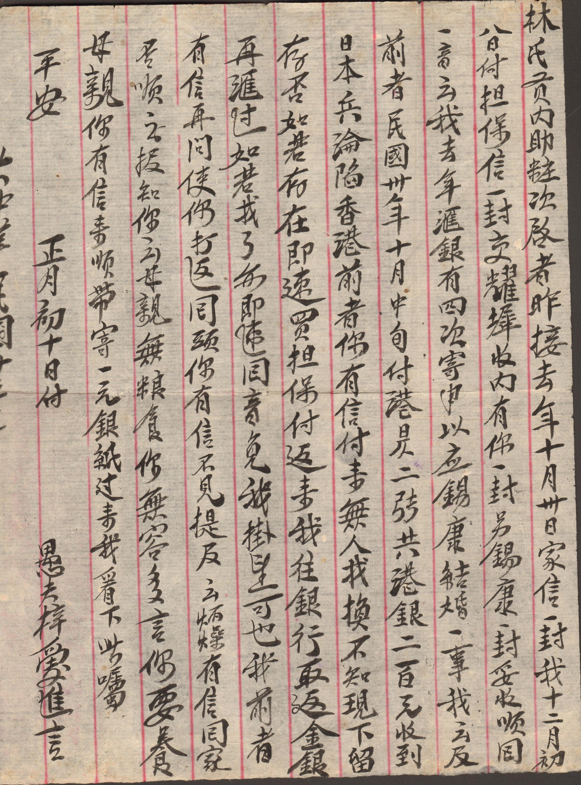
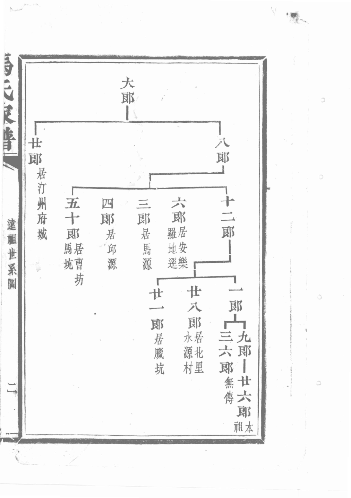
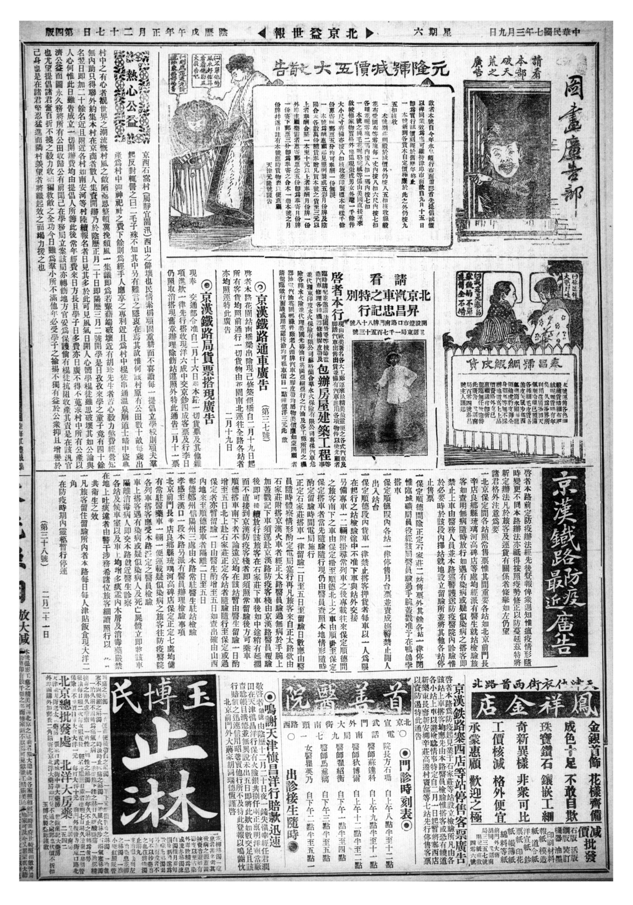
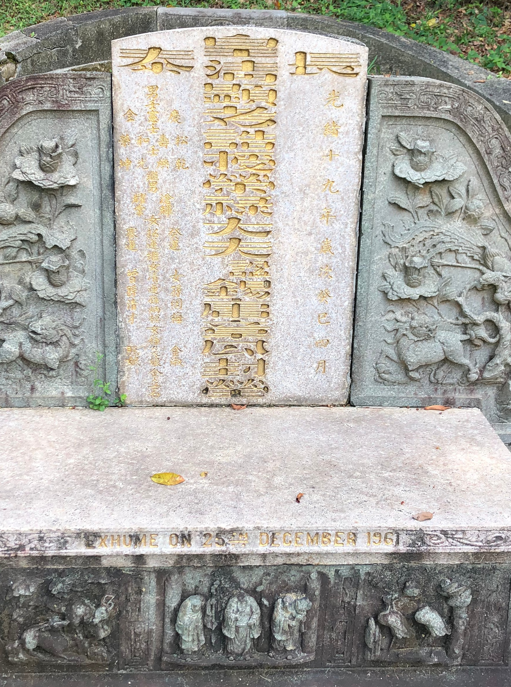
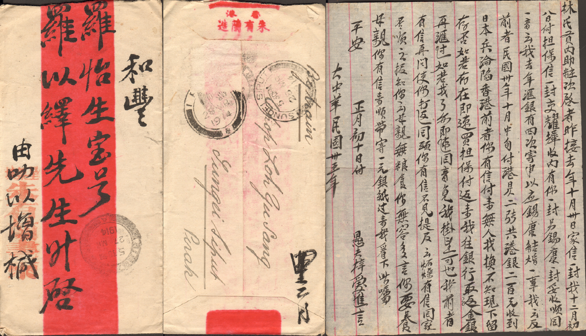
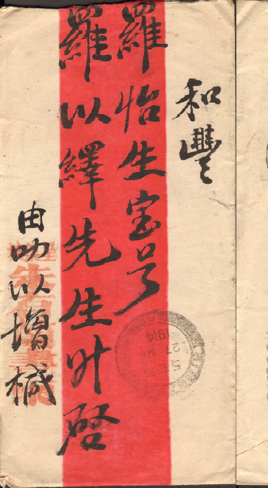
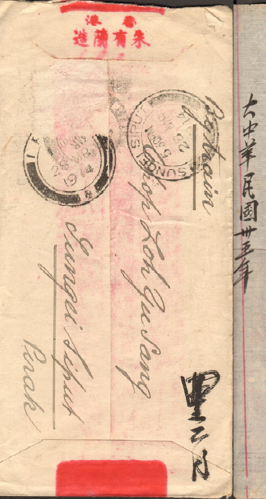
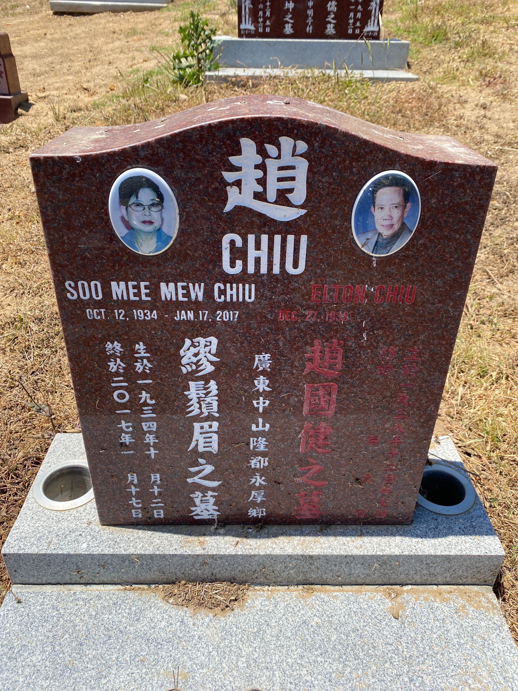

AI 提取史料：从原始材料结构化数据
AI 不太能代替人来解释史料、写结论，但可以先帮我们把材料认知清楚、提取字段、量化为结构化的数据
1
看清楚把图片、扫描件、录音转成可处理的信息。
2
提字段提取人名、时间、地点、金额、关系、事件。
3
可复核每条结果都能回到原图、原文或时间戳。

AI 不太能代替人来解释史料、写结论，但可以先帮我们把材料认知清楚、提取字段、量化为结构化的数据
同样是史料，PDF、照片、碑刻、录音的处理方式完全不同。
1.能复制文字的 PDF 直接抽文本
先把原始材料变成可核对的字段、证据和备注。

01
02
03
04 05
05
06重点是把金额、人名、地址、用途这些信息提取成可复核字段。
| 字段 | 结果 | 用途 |
|---|---|---|
| 金额 | 一元银纸 | 量化 |
| 证据 | 正文金额区域 | 证据 |
| 人名 | 林氏；耀辉；母亲；我 | 建立人物关系 |
| 用途 | 依据全文抽取 | 判断 |
同一封信可以拆成正文、信封、印章、地址几个区域。


| 材料位置 | 字段 | 识别草稿 | 证据 | 复核 |
|---|---|---|---|---|
| 信件正文 | 金额 | 一元银纸 | 金额分配区域 | 优先入表 |
| 信件正文 | 用途/分配 | 围绕金额上下文抽取 | 金额前后数行 | 人工读句 |
| 信件正文 | 亲属称谓 | 父、母、兄、嫂等候选 | 称谓出现行 | 结合上下文 |
| 信件正文 | 情绪表达 | 平安、急需、嘱托等 | 正文语句 | 可二次编码 |
| 信封正面 | 收寄人、地址 | 按地址块抽取 | 信封正面分区图 | 核对地名 |
| 信封背面 | 印章、邮戳 | 只作识别线索 | 印章区域 | 不直接定稿 |
| 整封信 | 材料编号 | 文件名 / 馆藏编号 | 原始文件 | 必须保留 |
| 整封信 | 转写版本 | v1 / v2 / 人工定稿 | 处理记录 | 便于追溯 |
谱牒里的竖线、横线、旁注，本身就是结构信息。
先把关系边一条一条落表。
关系图是为了说明数据里的“关系边”怎么来的。
| 人物A | 关系 | 人物/地点B | 证据位置 | 复核 |
|---|---|---|---|---|
| 上一代人物 | 父子 | 子一 | 世系页主线 | 核排行 |
| 上一代人物 | 父子 | 子二 | 世系页分支 | 核同名 |
| 上一代人物 | 父子 | 子三 | 横向分支 | 核旁支 |
| 子二 | 配偶 | 配偶姓名 | 旁注区域 | 别混主线 |
| 子二 | 子女 | 下一代人物 | 下接谱页 | 跨页核对 |
| 配偶姓名 | 葬地 | 某地 | 配偶子女与葬地页 | 地名校对 |
| 某支系 | 迁徙 | 某地 | 旁注或序文 | 可做统计 |
| 同名人物 | 候选合并 | 另一页人物 | 字辈、排行、父名 | 人工定 |
多栏、广告、嵌图会让 OCR 串行，先分区会稳很多。
先让模型标出区域，不急着转全文。
| 输出字段 | 说明 |
|---|---|
| 版次/日期 | 先定位报头 |
| 栏目区域 | 记录区域编号 |
| 阅读顺序 | 从上到下、从右到左 |
| 原文转写 | 保留疑难字 |
| 截图证据 | 回链原图 |
整墓图看结构，碑文特写才适合认字。
vlm+交叉审查+多轮清洗+人工复核
| 字段 | 处理方式 |
|---|---|
| 姓名 | 原文转写 + 规范名 |
| 时间 | 原文日期 + 标准日期 |
| 籍贯 | 原文地名 + 现代地名候选 |
| 关系 | 立碑人、亲属、社团 |
| 不确定字 | 用 □ 或候选字标出 |
中文姓、罗马字、英文名、中文碑文可以互相校验。

| 段 | 示例 | 复核 |
|---|---|---|
| 中文姓 | 赵 | 较清晰 |
| 罗马字 | CHIU | 互证 |
| 合葬者名字（英文） | SOO MEE MEW CHIU | 核拼写 |
| 日期 | 1934-10-12 至 2017-01-17 | 核图 |
| 中文碑文 | 逐行转写 | 人工核 |
OCR 只是入口，真正有用的是把文本拆成可检索、可连接、可复核的节点和关系。
| 原文单位 | 节点 | 关系 | 证据 |
|---|---|---|---|
| 卷/章/页 | 人物A | 出现于 | 原文句子 |
| 某章某段 | 人物A、人物B | 会见 / 冲突 | 原文句子 |
| 某章某段 | 地点C | 事件发生地 | 原文句子 |
| 某章某段 | 事件D | 发生于某时间 | 原文句子 |
| 某章某段 | 机构E | 任命 / 隶属 | 原文句子 |
| 跨章节 | 人物A | 同名合并候选 | 多处证据 |
| 全书 | 节点集合 | 统计 / 检索 | 回链原文 |
| 全书 | 关系边 | 网络可视化 | 抽样复核 |
| 时间节点 | 转写 | 复核点 |
|---|---|---|
| 00:00-00:18 | 自我介绍、地点、年代 | 人名地名 |
| 00:18-01:05 | 事件回忆 | 年份 |
| 01:05-02:10 | 家庭/迁徙经历 | 关系 |
| 02:10-03:00 | 职业、学校、社团经历 | 机构名 |
| 03:00-04:20 | 迁移路线、居住地变化 | 地名 |
| 04:20-05:10 | 对某事件的评价 | 语境 |
| 全段 | 摘要与主题词 | 授权 |
| 全段 | 敏感信息标记 | 隐私 |
不能只要求提取，要明确输出什么字段、如何标注不确定 项、如何回到原始材料。
每一条都要能追到原始材料。